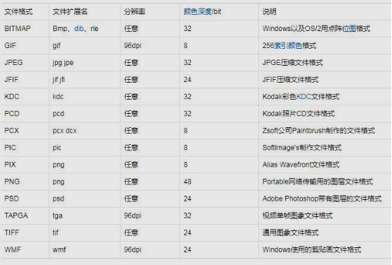

—————————————————————————————————————————————————————————— |
||||||||||||||||||||||||||||||||
练习4答案 |
||||||||||||||||||||||||||||||||
—————————————————————————————————————————————————————————— |
||||||||||||||||||||||||||||||||
|
||||||||||||||||||||||||||||||||
—————————————————————————————————————————————————————————— |
||||||||||||||||||||||||||||||||
| 答案解析： | ||||||||||||||||||||||||||||||||
| 2 核心数：是指CPU的物理核心数，也被称为内核。具体来说，核心数代表了CPU的内核数量，它决定了CPU的处理能力。 | ||||||||||||||||||||||||||||||||
| 3 | ||||||||||||||||||||||||||||||||
1011
+0111
1122-
->1210-->2010--->10010
逢二进一 |
||||||||||||||||||||||||||||||||
4
Firework:图形编辑软件
|
||||||||||||||||||||||||||||||||
| 6 图像文件格式有 | ||||||||||||||||||||||||||||||||
 |
||||||||||||||||||||||||||||||||
| 7 有线传输介质：双绞线；同轴电缆；光纤 | ||||||||||||||||||||||||||||||||
| 无线传输介质：无线电波；微波；红外线 | ||||||||||||||||||||||||||||||||
| 9 模式识别：以图像处理与计算机视觉，语音语言信息处理，脑网络组，类脑智能等为主要研究方向 | ||||||||||||||||||||||||||||||||
| 10
主板构成：①pci外设插槽，声卡、网卡、视频卡等②pcie
显卡插槽③CPU插槽④SATA数据线⑤内存插槽⑥IDE数据线⑦电源
|
||||||||||||||||||||||||||||||||
—————————————————————————————————————————————————————————— |